Welcome To Our Tamil Nadu Jewells Court
Traditional Jwellary of Tamil Nadu
In Tamil Nadu, jewellery is worn as a tradition and everyone is seen wearing some ornament or the oter. The ancient jewellery making tradition of this region speaks of a high degree of excellence and worksmanship. Gold is considered auspicious and good for health. It is made into ornaments for every part of the body except the feet, where it is worn only by gods and kings. The traditional bridal jewellery, set with stones and known as thalaisaamaan, is worn on the head and hair by devadaasis/temple dancers who were considered wedded to the deity and as such came to be called temple jewellery.
1. Jewellary for the Ear
Thodu, ear stud or ear rings. Kadukkan, small stud with single stone for men. Olai, large ear studs. Pampadam,gold earring with hallow balls and squares filled with lac. Worn by old ladies with big ear hole. Maattal, chain shaped jewel used to hook in the hair from the ear ring stud or nose stud. Lolakku, a designer jewel that hung from the ear stud. Kundalam, ear ornament for both men and women. Jimikki,another ear stud. Makara kuzhai, fish shaped ear ornament. Kadippu, Karnam, Saarpaipoo, Thandatti, Mudichi, Picharkal, Poodi.
1. Kammal
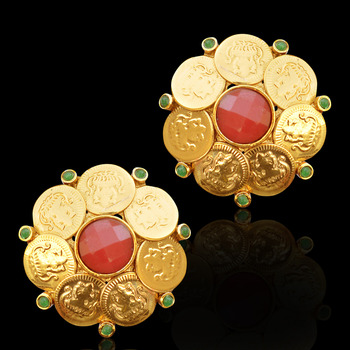2. Thandati
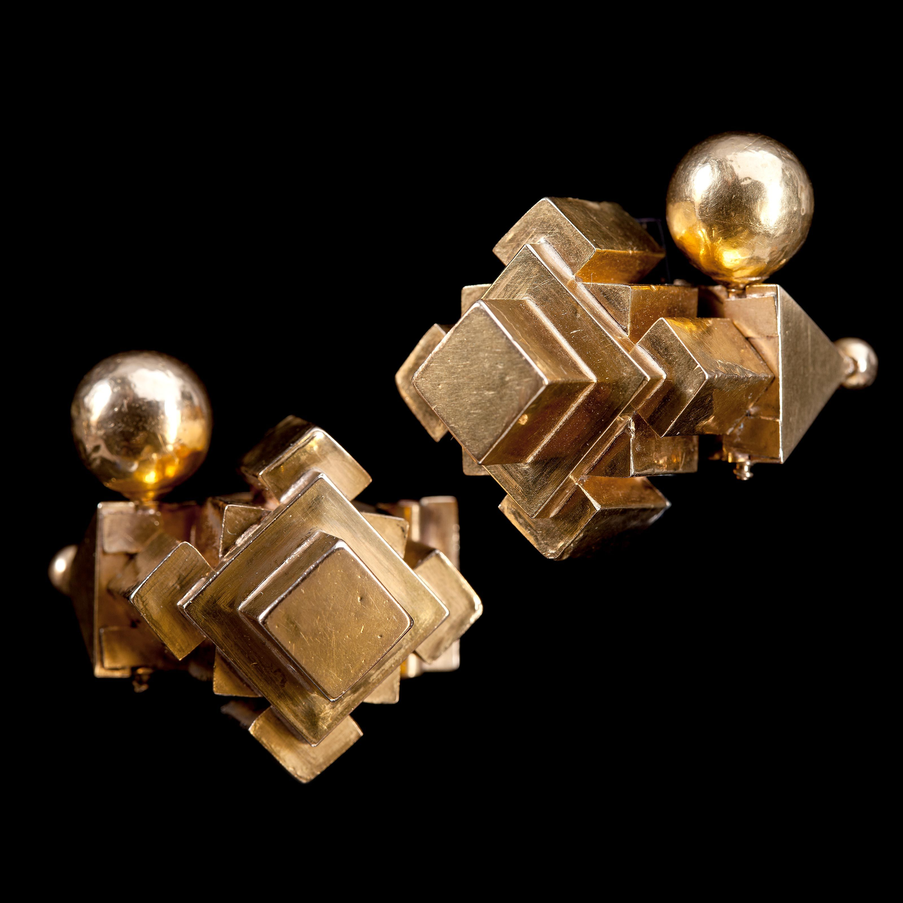3. Jimmiki Kammal
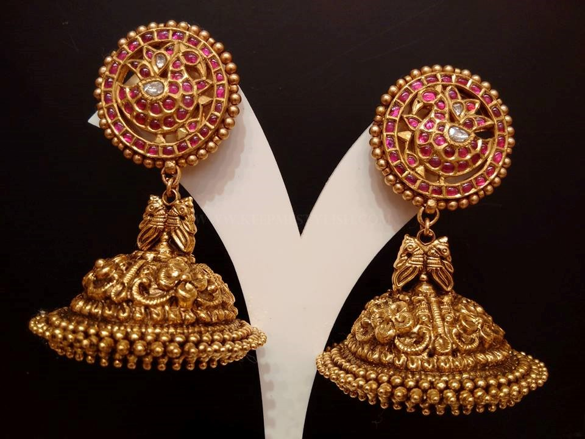2. Jewellary for the Head
Kreedam, golden crown worn by Deities and Kings, studded with precious stones and gems. Kunjam Nethi chutti or Vagupu chutti or Chutti, Jewel for the forehead. Rakkadi, used in the backhead, to hold the bunch of lengthy soft hair spun and tied. Surya & Chandra Pirai, Sun & Moon shaped ornamental jewel used to decorate their forehead. Jadanagam used to tie the hair band from back side. Pattam, tied by both bride and groom during wedding on their forehead. Kandasaram and Kechaparam are tied on the braid. Thirugupoo, round ornament with screw like back used to wore on the backhead in the center. Kunjam, women ties it at the end of braid. It stimulate long hair growth.
1. Nethichudi
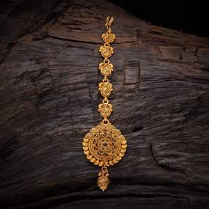2. Thalaisaman
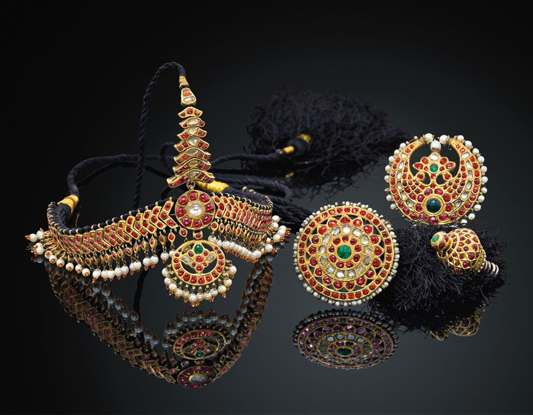3. Jada Billai
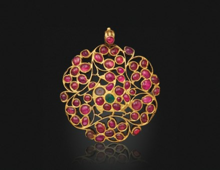3. Jewellary for the Neck
Thaali or Suthuru or Mangalyam, groom ties around bride's neck during marriage that show the bondage between them. The shape differs according to the caste. Attigai, necklace like ornament worn very close to neck. Aaram or Haram, Necklace. Maalai or Charam, Made of plain gold or pearls & corals. Kaasu Maalai, long chain made of gold coins. Maanga Maalai, long chain designed like mango(Paisley (design)) studded with stones and gems. Vettrilai Kovai, betel-leaf-shaped pendants on long chain. Kodi Maalai, a chain made in the shape of leaves and plants of soft designs in plain gold. Sangili, Chain made of gold only. Kaarai, neck ornament, Contrakaram, moon shaped ornament for the chest. Listed out in Sangam literature 'Silapathikaram'. Chavadi, five layers of chain. Vilakku mooku a chain model. Godumai vidhai a chain model of wheat. Pirandai kattai a chain model of pirandai plant. Erattai vadam Malai a type of linked two chains.
1. Attigai
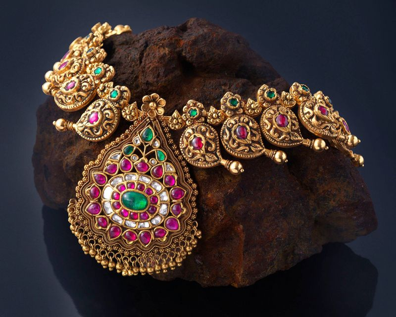2. Kasumalai
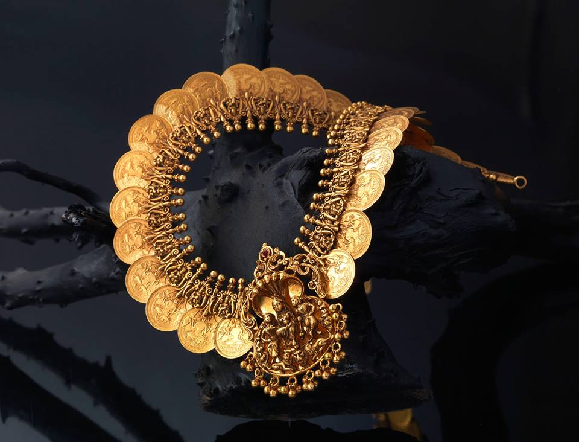3. Sangili
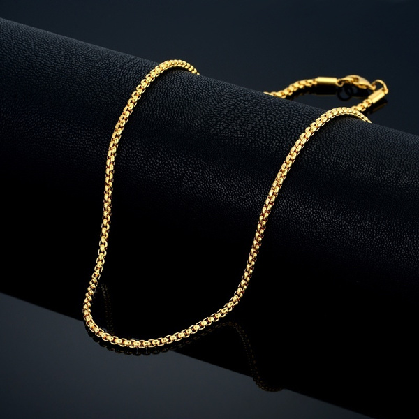4. Jewellary for the Nose
Mookuthi, Nose stead (Mukkuthi). Besari, a stud in gold with stone studded Nose stud or ear stead with a hanging design. Bullakku, A designer jewel that hangs from the nose stead or ear stead.
1. Bullaku
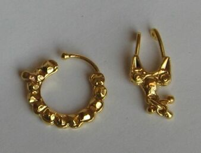2. Mookuthi
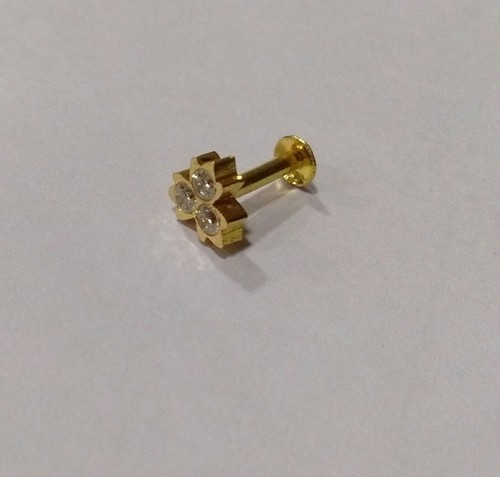3. Mooku Valayam

5. Jewellary for the Waist
Oddiyanam, waist belt used to tighten the sari, in the hip. Aranaal, a chain shaped one used along with inner side of sari at hip. Aranjanam or Araijnan Kayiru or Araijnan Kodi, silver or gold chain for tie around the waist of infants or children and men even thick black or red thread will be used. Arasala (Arasa ilai), pipal or sacred fig leaf like ornament with waist chain made up of gold or silver for babies (female).
1. Oddiyanam
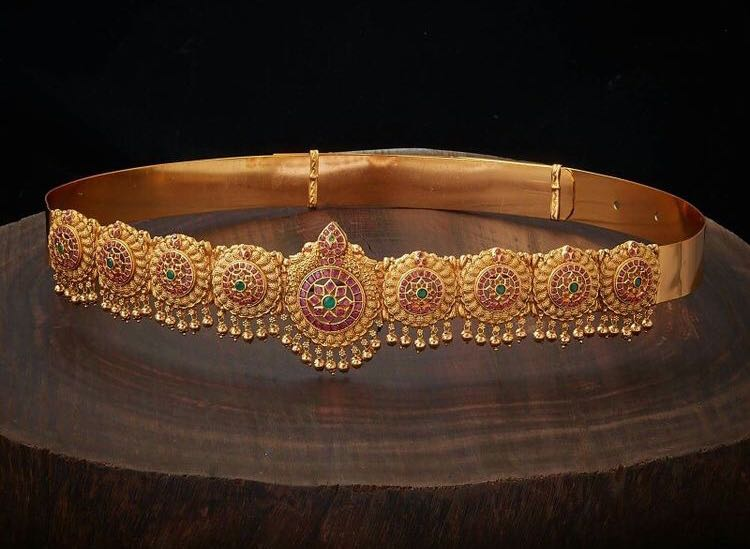2. Aranjanam

3. Araijnan Kayiru
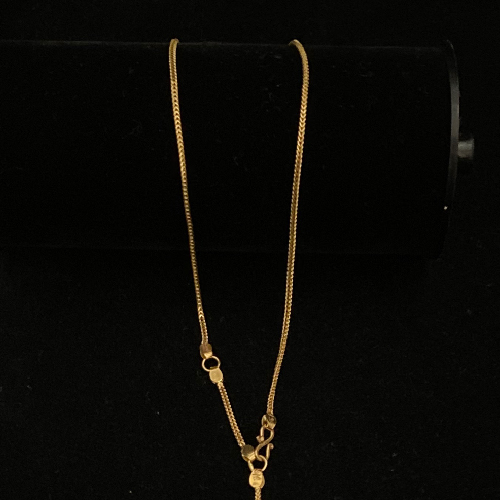6. Jewellary for the Hand
Valayal or Sarivu, bangles made up of plain gold or gold with stones or gems. Kaikappu, bangles without designs known as Kappu. Mothiram or Neli, finger ring. Vangi or Vanki, armband. Nagothu, Naga(snake) shape on vanki. Kanganam (armband), Tholvalai Kappu used in the shoulder to hold the sari. Nagar or Nagam, A cobra shaped ornament used the upper arms.
1. Valayal
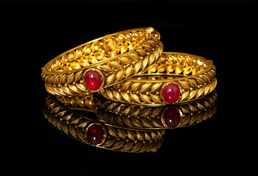2. Ring
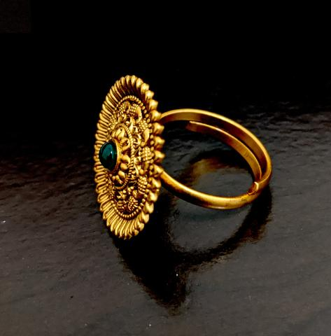3. Vanki
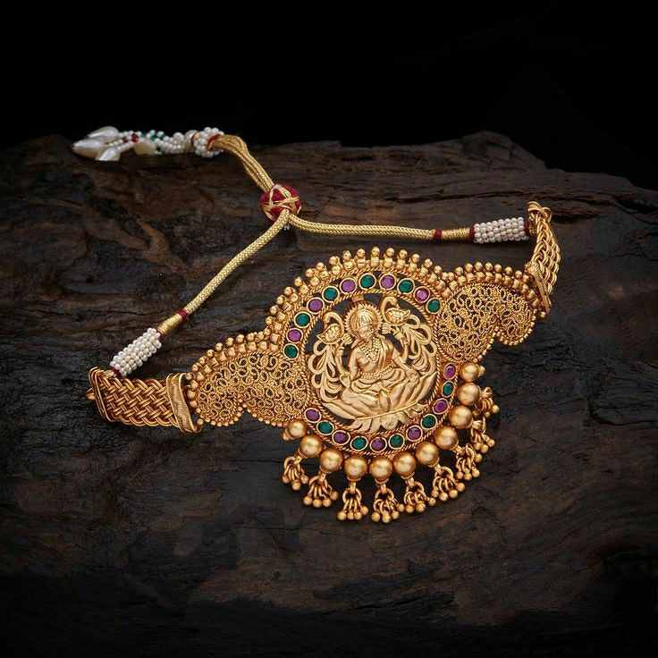7. Jewellary for the Feet
Silambu, ring shaped anklet, like hollow pipe that used to contain precious stones, silver balls, pearl or coral beads. The Sangam literature 'Silapathikaram' named after silambu. Sathangai or Salangai, a series of small silver bells and worn in the anklet, used by classical dancers like Bharathanatyam dancers. Listed out in Sangam literature 'Silapathikaram'. Metti or Minji or Peeli, grooms place it on the bride's second finger from toe during wedding. Kolusu (Anklet) made in silver with varieties of shape and design. Thandai or Patharasam, same as Silambu but heavy. Silambu & Kolusu & Kaappu (Plain anklets). Padakkam, listed out in Sangam literature 'Silapathikaram'.
1. Kolusu
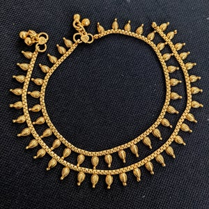2. Salangai
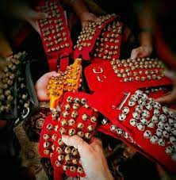3. Kaappu
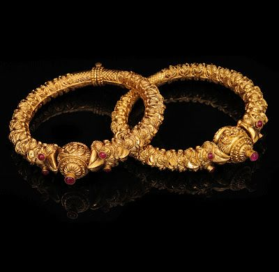
Fancy Jwellary of Tamil Nadu
Fashion jewelry, also known as costume jewelry, is usually made with base metals and simulated stones. These pieces are often made with brass, copper, or aluminum, which bend and tarnish easily. Jewelry made entirely out of textiles or leather, base metal alloys, and even metals plated with precious metals like gold or silver also fall under fashion jewelry. Simulated stones include plastic stones, cubic zirconia, and Swarovski crystals. Because fashion jewelry is made of materials that are prone to cracking or tarnishing, they do not have much of a shelf life.
1. Jewellary for the Ear
Thodu, ear stud or ear rings. Kadukkan, small stud with single stone for men. Olai, large ear studs. Pampadam,gold earring with hallow balls and squares filled with lac. Worn by old ladies with big ear hole. Maattal, chain shaped jewel used to hook in the hair from the ear ring stud or nose stud. Lolakku, a designer jewel that hung from the ear stud. Kundalam, ear ornament for both men and women. Jimikki,another ear stud. Makara kuzhai, fish shaped ear ornament. Kadippu, Karnam, Saarpaipoo, Thandatti, Mudichi, Picharkal, Poodi.
1. Valaya Kammal
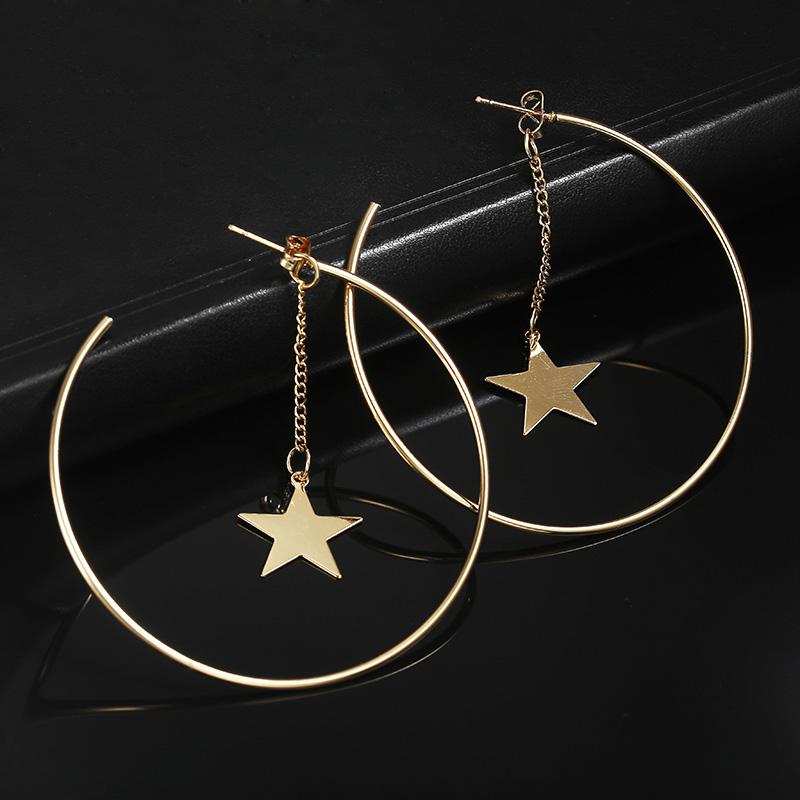2. Kammal
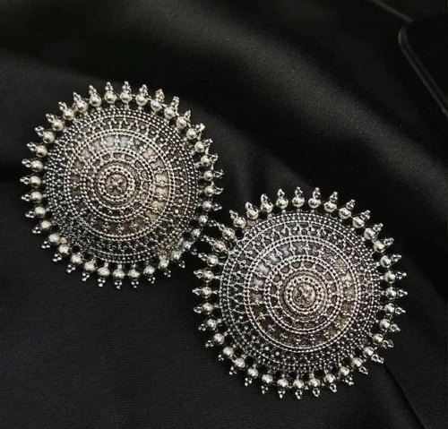3. Kokki Kammal
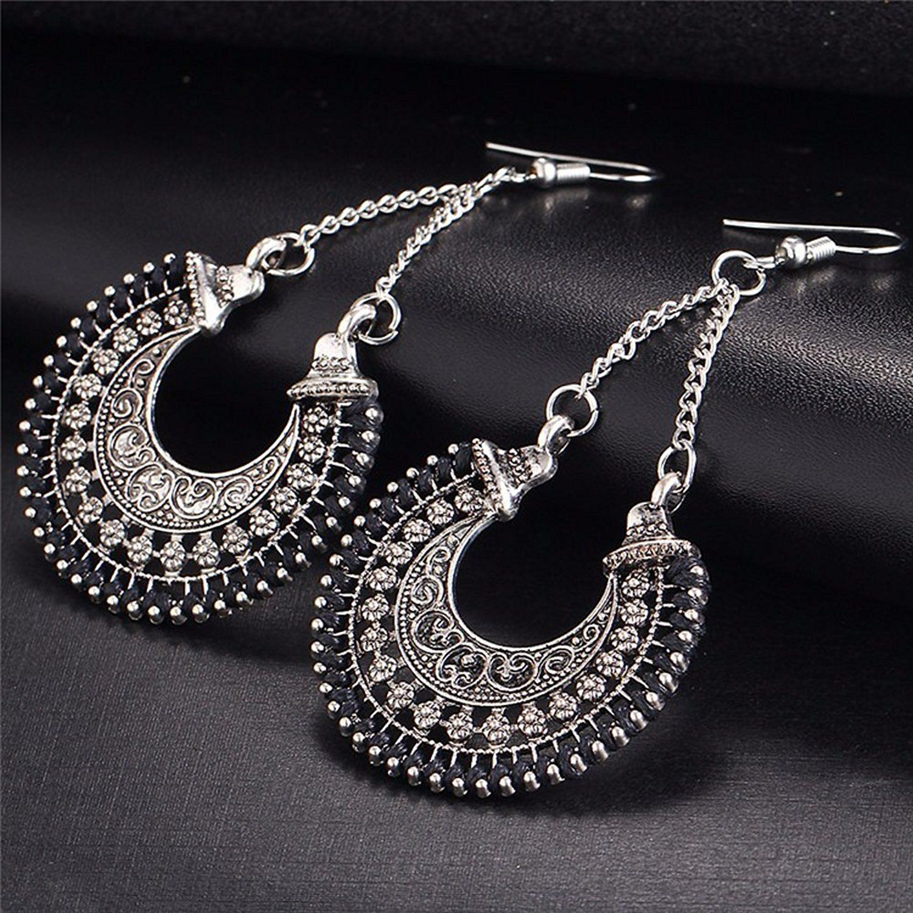2. Jewellary for the Head
Kreedam, golden crown worn by Deities and Kings, studded with precious stones and gems. Kunjam Nethi chutti or Vagupu chutti or Chutti, Jewel for the forehead. Rakkadi, used in the backhead, to hold the bunch of lengthy soft hair spun and tied. Surya & Chandra Pirai, Sun & Moon shaped ornamental jewel used to decorate their forehead. Jadanagam used to tie the hair band from back side. Pattam, tied by both bride and groom during wedding on their forehead. Kandasaram and Kechaparam are tied on the braid. Thirugupoo, round ornament with screw like back used to wore on the backhead in the center. Kunjam, women ties it at the end of braid. It stimulate long hair growth.
1. Nethichudi
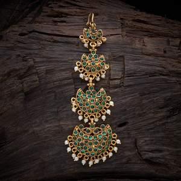2. Thalaisaman
3. Jada Billai
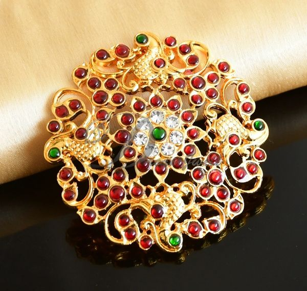3. Jewellary for the Neck
Thaali or Suthuru or Mangalyam, groom ties around bride's neck during marriage that show the bondage between them. The shape differs according to the caste. Attigai, necklace like ornament worn very close to neck. Aaram or Haram, Necklace. Maalai or Charam, Made of plain gold or pearls & corals. Kaasu Maalai, long chain made of gold coins. Maanga Maalai, long chain designed like mango(Paisley (design)) studded with stones and gems. Vettrilai Kovai, betel-leaf-shaped pendants on long chain. Kodi Maalai, a chain made in the shape of leaves and plants of soft designs in plain gold. Sangili, Chain made of gold only. Kaarai, neck ornament, Contrakaram, moon shaped ornament for the chest. Listed out in Sangam literature 'Silapathikaram'. Chavadi, five layers of chain. Vilakku mooku a chain model. Godumai vidhai a chain model of wheat. Pirandai kattai a chain model of pirandai plant. Erattai vadam Malai a type of linked two chains.
1. Attigai
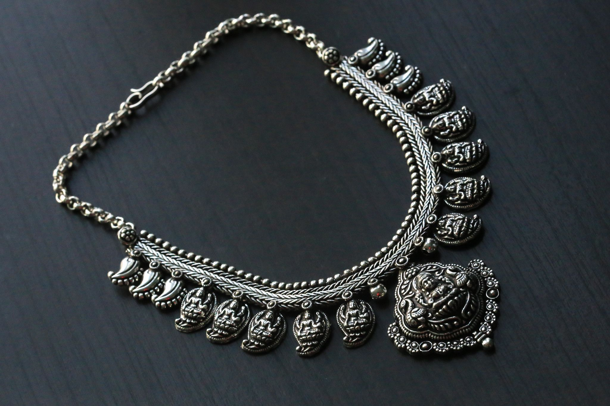2. Kasumalai
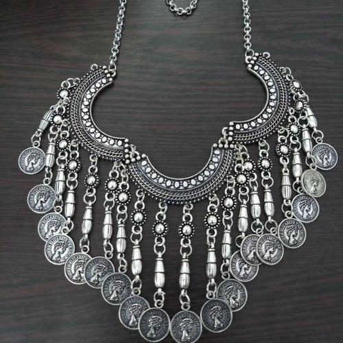3. Sangili
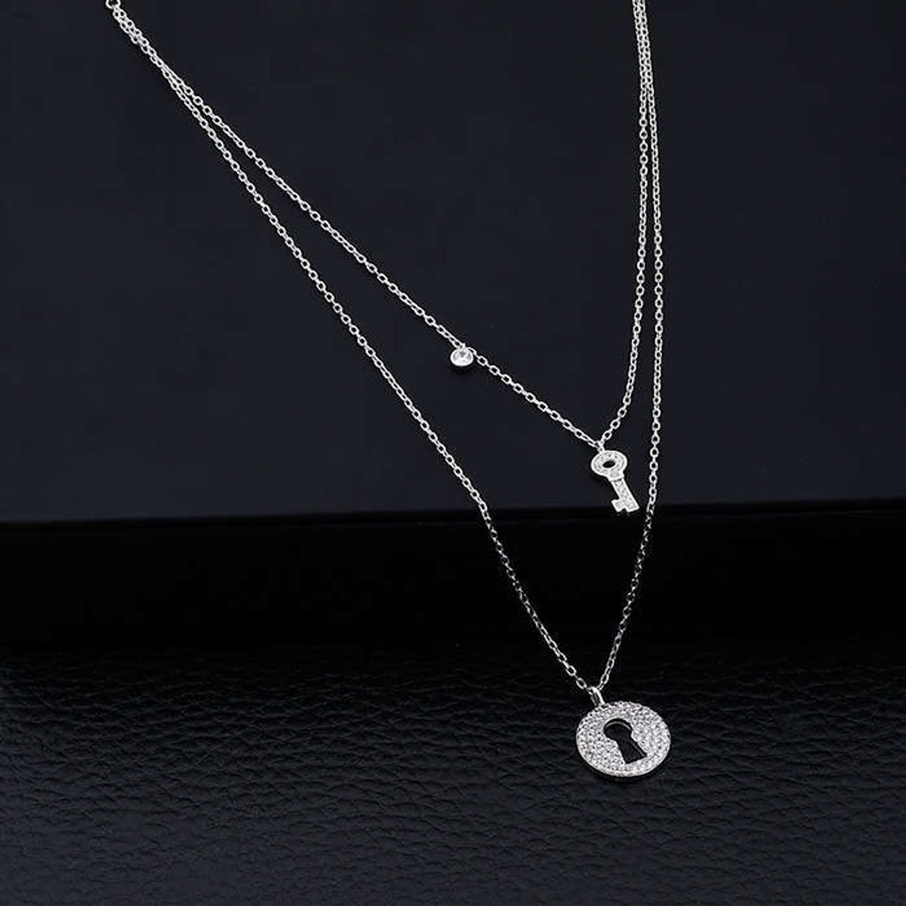4. Jewellary for the Nose
Mookuthi, Nose stead (Mukkuthi). Besari, a stud in gold with stone studded Nose stud or ear stead with a hanging design. Bullakku, A designer jewel that hangs from the nose stead or ear stead.
1. Bullaku
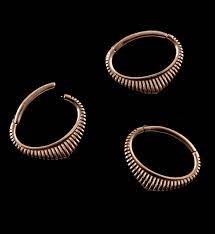2. Mookuthi
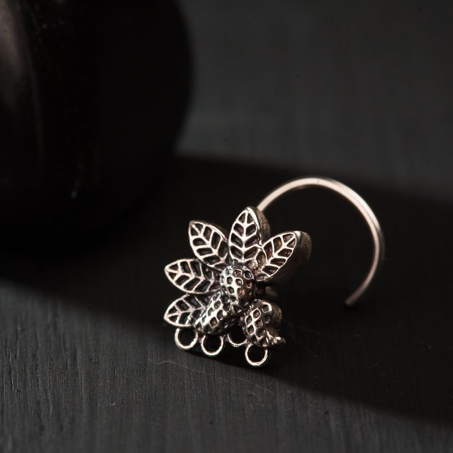3. Mooku Valayam
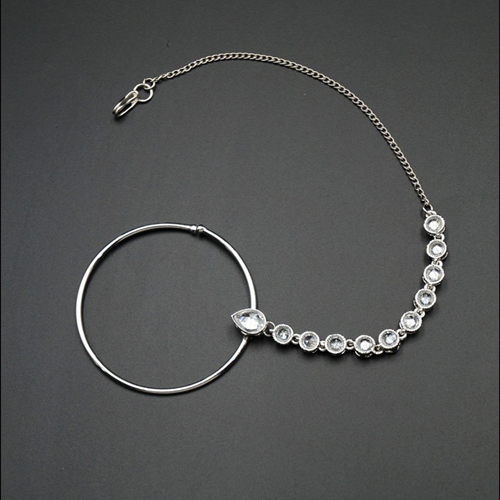5. Jewellary for the Waist
Oddiyanam, waist belt used to tighten the sari, in the hip. Aranaal, a chain shaped one used along with inner side of sari at hip. Aranjanam or Araijnan Kayiru or Araijnan Kodi, silver or gold chain for tie around the waist of infants or children and men even thick black or red thread will be used. Arasala (Arasa ilai), pipal or sacred fig leaf like ornament with waist chain made up of gold or silver for babies (female).
1. Oddiyanam
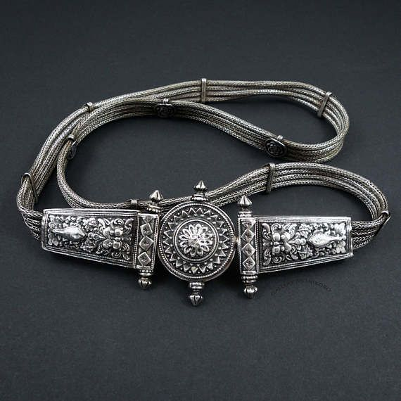2. Aranjanam
3. Araijnan Kayiru
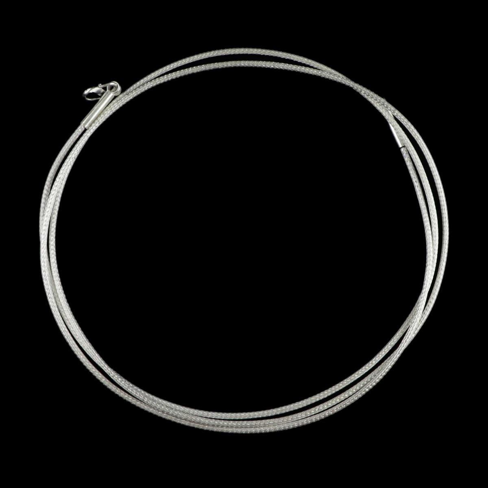6. Jewellary for the Hand
Valayal or Sarivu, bangles made up of plain gold or gold with stones or gems. Kaikappu, bangles without designs known as Kappu. Mothiram or Neli, finger ring. Vangi or Vanki, armband. Nagothu, Naga(snake) shape on vanki. Kanganam (armband), Tholvalai Kappu used in the shoulder to hold the sari. Nagar or Nagam, A cobra shaped ornament used the upper arms.
1. Valayal
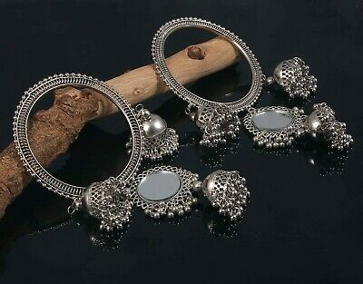2. Ring
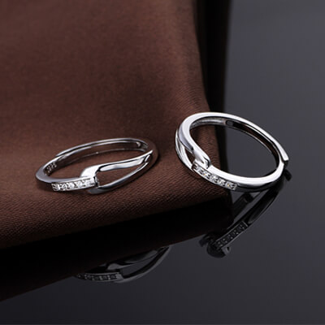3. Vanki
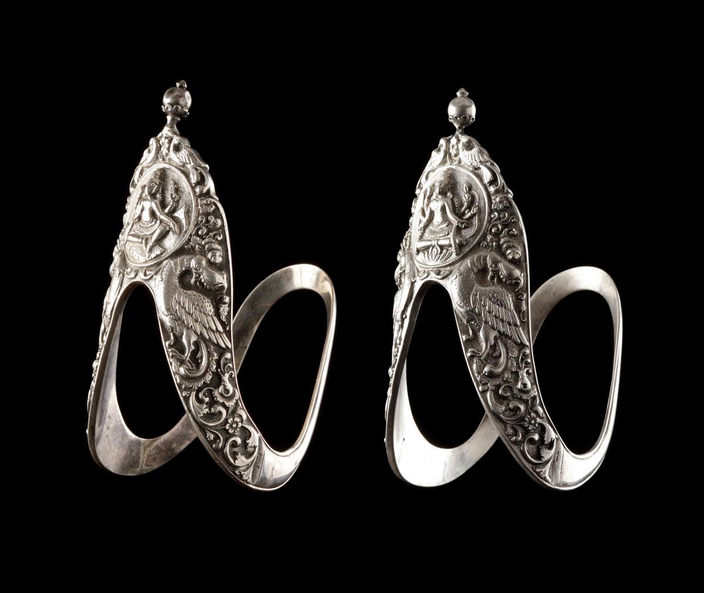7. Jewellary for the Feet
Silambu, ring shaped anklet, like hollow pipe that used to contain precious stones, silver balls, pearl or coral beads. The Sangam literature 'Silapathikaram' named after silambu. Sathangai or Salangai, a series of small silver bells and worn in the anklet, used by classical dancers like Bharathanatyam dancers. Listed out in Sangam literature 'Silapathikaram'. Metti or Minji or Peeli, grooms place it on the bride's second finger from toe during wedding. Kolusu (Anklet) made in silver with varieties of shape and design. Thandai or Patharasam, same as Silambu but heavy. Silambu & Kolusu & Kaappu (Plain anklets). Padakkam, listed out in Sangam literature 'Silapathikaram'.